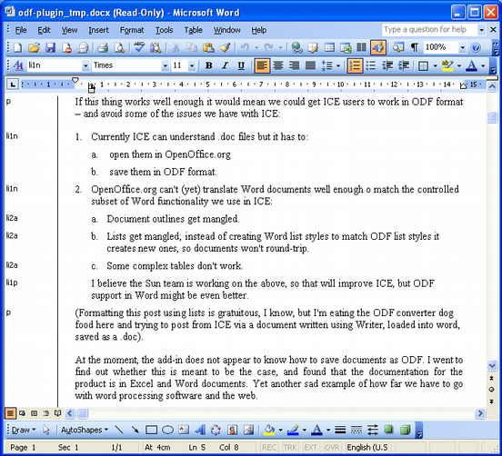

A first look at the ODF Add-in for Word 2003
2006-10-23
I finally got around to trying out the OpenDocument (ODF) add-in for Microsoft Word 2003.
If this thing works well enough it would mean we could get ICE users who prefer to use Word to work in ODF format – and avoid some of the issues we have with ICE:
-
Currently ICE can understand .doc files but it has to:
-
open them in OpenOffice.org
-
save them in ODF format.
-
-
OpenOffice.org can't (yet) translate Word documents well enough to match the controlled subset of Word functionality we use in ICE:
-
Document outlines get mangled.
-
Lists get mangled; instead of creating Word list styles to match ODF list styles it creates new ones, so documents won't round-trip.
-
Some complex tables don't work.
-
(Formatting this post using lists is gratuitous, I know, but I'm eating the ODF converter dog food here and trying to post from ICE via a document written using Writer, loaded into Word, saved as a .doc).
I don't care which standard(s) we end up supporting with ICE; the already standardized OpenDocument Format or Microsoft's XML format which is speeding through standardization right now. I suspect that either would do for ICE, because ICE is a middle-of-the-road application that uses core word processing functionality. Remember that ICE means Interchange Comes Easily.
At the moment, the ODF add-in for Word does not appear to know how to save documents as ODF. I went to find out whether this is meant to be the case, and found that the documentation for the product is in Excel and Word documents. Yet another sad example of how far we have to go with word processing software and the web. Why in 2006 aren't we all working with a word processor profile that gives us HTML export?
Anyway, here's a quote from the documentation:
The Add-in when installed will become available as a easily available menu item in Word 2007. The sub items under the Menu item “ODF” will be –
Open ODF…
Open an Open Document Format File
Save as ODF…
Save a copy of the document Fully Compatible with Open Document Format (ODF)
Of these two, the first one would be functional in the prototype while the second one would be a dummy menu item for now and would become functional in later releases.
So for now you can't save ODF from Word so it's useless to ICE. (But note that if you use ICE to format your product documentation then you get not only a printable version but a web view as well).
But here's how the ODF add-in converted the first part of this document:

The add-in warned me about not supporting relative font sizes, which I
can live with, 'cos I don't think we use them in ICE. And the
translation has worked remarkably well, except for the first second
level list, where the style information (li2a) has been lost. A new
style called
Outline numbered, Times, 11 pt, Left: 0.6 cm, Hanging: 0.6 cm has
been created. Ugh.
Weirdly the second example of a second-level list kept its style. I'll figure out how to report this to the add-in team.
So I can't complete the mission of writing in Writer, importing into word, saving as .doc and using ICE to publish. But it's promising that the add-in is close to supporting the core ICE styles. Still, until the add-in supports “Save as ODF” there's little point in looking at it for our purposes on the ICE project.